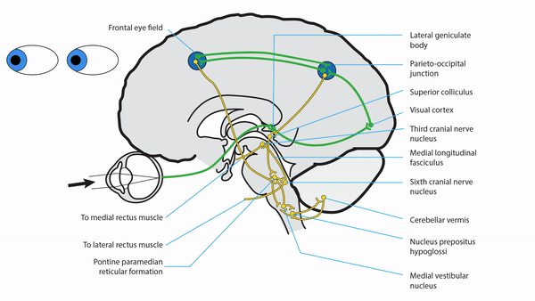
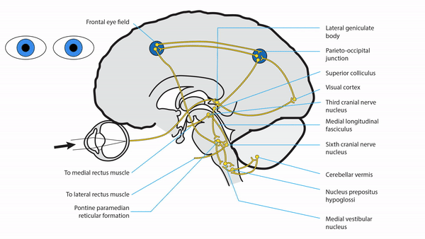
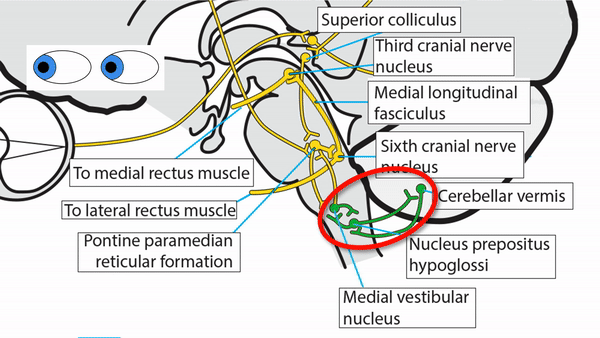
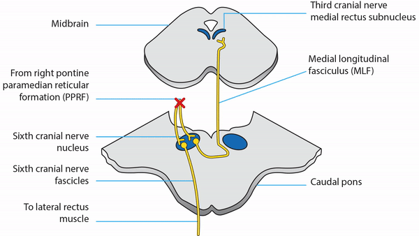
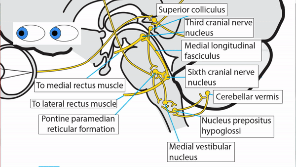
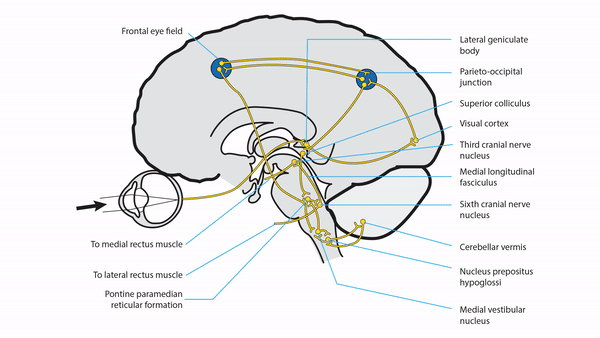
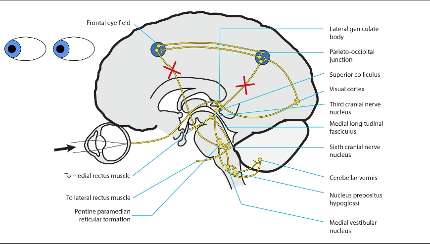
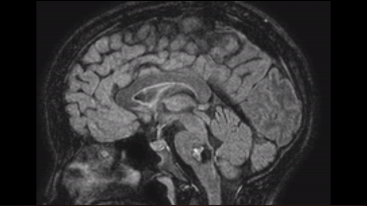
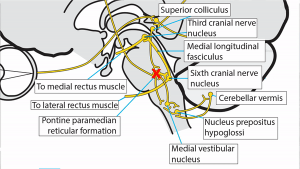

Horizontal Saccades


- Visually-guided saccades are triggered by seeing a target in the peripheral visual field or by the desire to fixate unseen target
-
Visual signal goes to
- Visual Cortex
- Occipital-parietal
- Frontal gaze centers
- Superior colliculus
- Contralateral pontine paramedian reticular formation silencing omnipause neurons and activating burst cells
- PPRF connects to medullary nucleus prepositus hypoglossi (NPH) and medial vestibular nucleus (MVN) to sustain eccentric gaze PPRF to NPH
- NPH and MVN link to cerebellar vermis and PPRF to maintain accuracy of saccadic movements
- PPRF sends signal to ipsilateral sixth nerve nucleus, which connects through fascicular axons to ipsilateral lateral rectus muscle to drive abduction of one eye and through medial longitudinal fasciculus (MLF) to contralateral medial rectus subnucleus to drive adduction of other eye
- For non-visually guided horizontal saccades, cerebral signal originates in frontal gaze center rather than in occipital-parietal gaze center, but otherwise uses same pathway
-
Tip: not all saccades are voluntary! Reflexive saccades (“quick phases”) occur automatically to counteract slow conjugate ocular drift in jerk nystagmus and as rapid eye movements of sleep; probably generated within brainstem












-
Unilateral cerebral lesion
- Impairs contralaterally-directed horizontal saccades
- May cause ipsilateral horizontal gaze deviation
- Spares vestibulo-ocular reflex because that pathway is confined to brainstem
-
Bilateral cerebral lesions
- Impair volitional saccades and pursuit in all directions, sparing vestibulo-ocular reflex (“supranuclear gaze palsy”)
- Idiopathic congenital variant called “congenital ocular motor apraxia;” usually spares vertical gaze and produces distinctive horizontal head thrusts; often resolves spontaneously by 2nd decade of life
-
Acquired variant called “ocular motor apraxia;”
- Common acute cause is bihemispheric stroke (Balint-Holmes syndrome)
- Common chronic cause is progressive supranuclear palsy Horizontal Supranuclear Gaze Palsy
-
Pontine lesion
- May damage PPRF and sixth nerve nucleus, impairing ipsilateral horizontal saccades, pursuit, and vestibulo-ocular reflex PPRF and 6th Nerve Nuclear Lesion Revised and produce ipsilateral horizontal gaze palsy sometimes with contralateral gaze deviation Right Pontine Gaze Palsy
-
Tip: with lesions of sixth nerve nucleus, expect deficit in seventh nerve function because axons to seventh nerve curl over sixth nerve nucleus
- May damage sixth nerve fascicles, causing ipsilateral abduction deficit and esotropia, sometimes with ataxia and contralateral hemiparesis
- May damage medial longitudinal fasciculus, producing adduction deficits and abducting nystagmus (internuclear ophthalmoplegia) R INO
-
Tip: pontine lesions often also cause nystagmus and skew deviation
- Common causes: inflammation in young patients, stroke in older patients

-
Medullary lesions
- Impairs eccentric gaze maintenance, producing gaze-evoked nystagmus Sidebeat Nystagmus
- Unilateral lesion may cause deviation of eyes under closed lids (lateropulsion)
- Common causes: stroke, inflammation, tumor
-
Sixth nerve nuclear lesion
- Unilateral lesion impairs ipsilateral horizontal gaze for saccades, pursuit, and vestibulo-ocular reflex
- May produce contralateral gaze deviation
- Common causes: stroke, inflammation, tumor
-
Cerebellar pathway lesion
- Impairs accuracy of saccades and eccentric gaze maintenance, producing nystagmus and ocular dysmetria Ocular Dysmetria
- Common causes: stroke, inflammation, tumor




